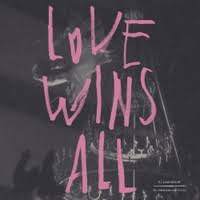

"Dearest, Darling, My universe 날 데려가 줄래? 나의 이 가난한 상상력으론
떠올릴 수 없는 곳으로 저기 멀리 from Earth to Mars 꼭 같이 가줄래? 그곳이
어디든, 오랜 외로움 그 반대말을 찾아서 어떤 실수로 이토록 우리는 함께일까
세상에게서 도망쳐 Run on 나와 저 끝까지 가줘 My lover 나쁜 결말일까 길
잃은 우리 둘 um 부서지도록 나를 꼭 안아 더 사랑히 내게 입맞춰 Lover Love
is all Love is all Love Love Love Love 결국, 그럼에도, 어째서 우리는
서로일까 세상에게서 도망쳐 Run on 나와 저 끝까지 가줘 My lover 나쁜
결말일까 길 잃은 우리 둘 um 찬찬히 너를 두 눈에 담아 한 번 더 편안히
웃어주렴 유영하듯 떠오른 그날 그 밤처럼, 나와 함께 겁 없이 저물어줄래?
산산히 나를 더 망쳐 Ruiner 너와 슬퍼지고 싶어 My lover 필연에게서 도망쳐
Run on 나와 저 끝까지 가줘 My lover 일부러 나란히 길 잃은 우리 두 사람
부서지도록 나를 꼭 안아 더 사랑히 내게 입맞춰 Lover Our Love wins all Love
wins all Love Love Love Love"